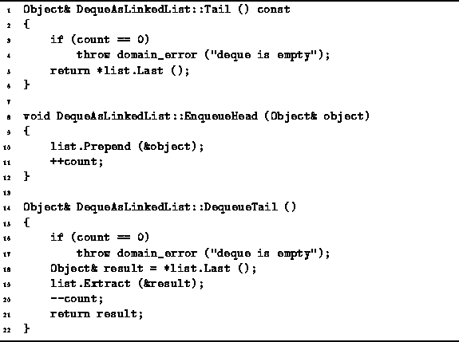

Data Structures and Algorithms
with Object-Oriented Design Patterns in C++
Data Structures and Algorithms
with Object-Oriented Design Patterns in C++
Program  defines the Tail,
EnqueueHead and DequeueTail member functions
of the DequeAsArray class.
defines the Tail,
EnqueueHead and DequeueTail member functions
of the DequeAsArray class.

Program: DequeAsLinkedList Class Tail, EnqueueTail and DequeueTail Member Function Definitions
The Tail member function
returns a const reference to the object at the tail of the deque.
The tail of the deque is in the last element of the linked list.
In Chapter we saw that the running time of
LinkedList<T>::Last is a constant,
Therefore, the normal running time for the Tail function is O(1).
The EnqueueHead function takes a single argument--a reference to the object to be added to the head of the deque. The function simply calls the LinkedList<T>::Prepend function. Since the running time for Prepend is O(1), the running time of EnqueueHead is also O(1).
The DequeueTail function removes an object from the tail
of the deque and returns a reference to that object.
First, it verifies that the deque is not empty
and throws an exception when it is.
If the deque is not empty,
DequeueTail saves a reference to the last item in the linked list
in the local variable result.
Then the item of the linked list is removed from the list.
When using the LinkedList<T> class from Chapter ,
the time required to delete the last item from a list is O(n),
where  is the number of items in the list.
As a result,
the running time of DequeueTail is O(n).
is the number of items in the list.
As a result,
the running time of DequeueTail is O(n).
 Copyright © 1997 by Bruno R. Preiss, P.Eng. All rights reserved.
Copyright © 1997 by Bruno R. Preiss, P.Eng. All rights reserved.